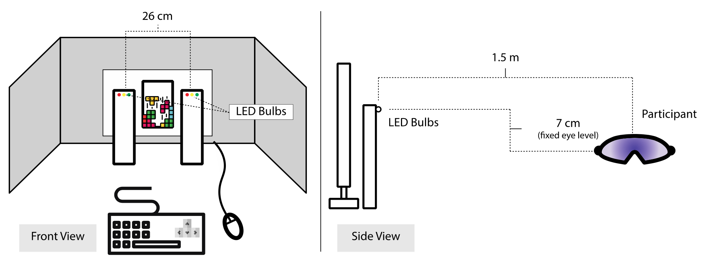

In the summer of 2019 I worked as a UX Research Intern at Oakley, where they were in the midst of rolling out their new Prizm lens technology. Prizm lenses are made with a then-new contrast-enhancing technology that filters out certain wavelengths of light. The effect is that it appears to make certain colors stand out more than they normally would.
Because of certain driving standards in place, Oakley wanted to investigate whether or not their new lens technology had any significant impact on reaction time for color deficient and color normal individuals.
My job was to design an experiment that could be used to show that their lenses do not negatively effect reaction times, so that Oakley could use this evidence as a lobbying tool toward current driving regulations. I designed the experiment, gathered participants, and conducted the entire study over a single summer, and published my results in Springer's Advances in Intelligent Systems and Computing (AISC).
After researching different methods of testing, I borrowed heavily from the study design used by Stephen Dain & David Atchison in their paper titled Sunglasses, Traffic Signals, and Color Vision Deficiencies, as this suited our purposes fairly well and had been referenced by numerous traffic industry standards.
Our study consisted of 18 color deficient and 18 color normal participants, and three different lenses (2 Prizm lenses and one neutral density lens). Each participant partook in a visual-motor task while lights of different colors flashed at 5 degrees to either side of their focal point, to which they would respond to with an input device as quickly as possible. These lights were made precisely to replicate a 200 mm traffic signal from 100 m away in color and intensity.
To conduct the study, I had to locate color deficient and color normal participants, code the software for the lighting and input device so as to correctly record reaction time, as well as build and wire the entire setup. Additionally, I had to take spectral readings and intensity readings of different LED bulbs to ensure they were within proper specifications as outlined by certain industry standards.

The results were well-aligned with our hypothesis, which was that the Prizm lenses would have no negative impact on reaction times or error rates. You can see the normalized results for both reaction time (s) and error rate (% incorrect) below, with the error bars representing the 95% confidence interval for each lens.
It was expected that color-deficient participants would perform worse than color-normal participants with regard to both reaction time and error rate, as this has been shown in numerous other studies. As you can see, the 95% confidence intervals overlap for each lens for color deficients, and the data points are nearly identical for color normals.
Further statistical analysis and ANOVA concluded that there was no statistically significant difference between lenses for both reaction time and error rate, which provides good evidence toward Oakley's hypothesis that Prizm lenses have no detrimental effects on reaction time.
As a result of my research the driving standards in question were easied immediately, which eliminated certain restrictions on Oakley's new lens technology. My results were published in Springer's Advances in Intelligent Systems and Computing (AISC), and once my findings are replicated by an additional study the laws may be changed permanently.